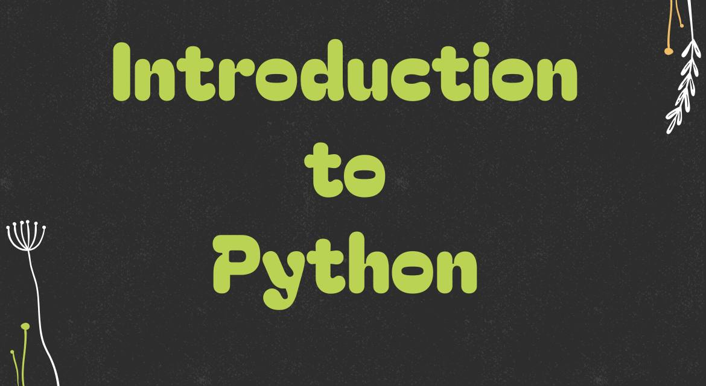
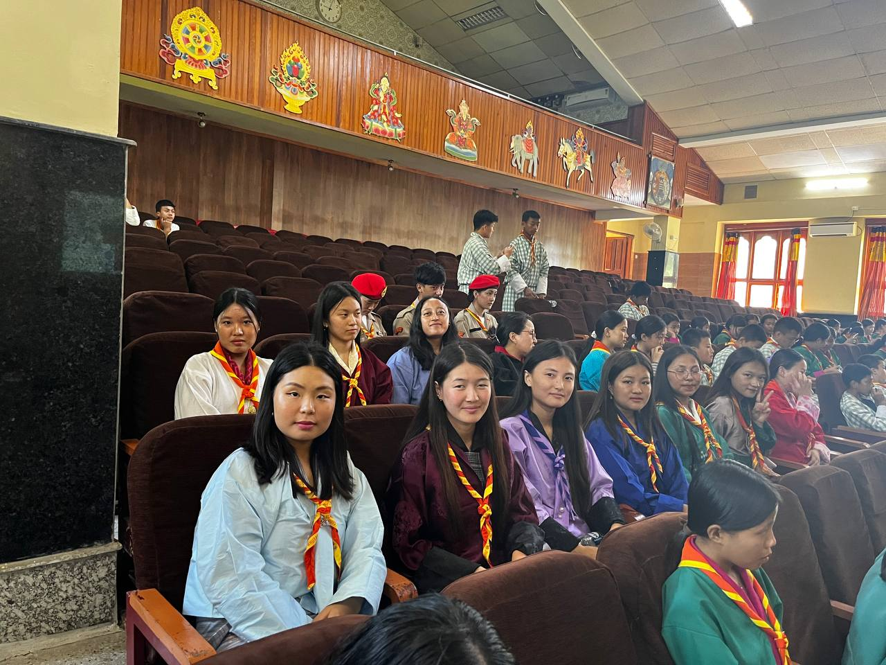
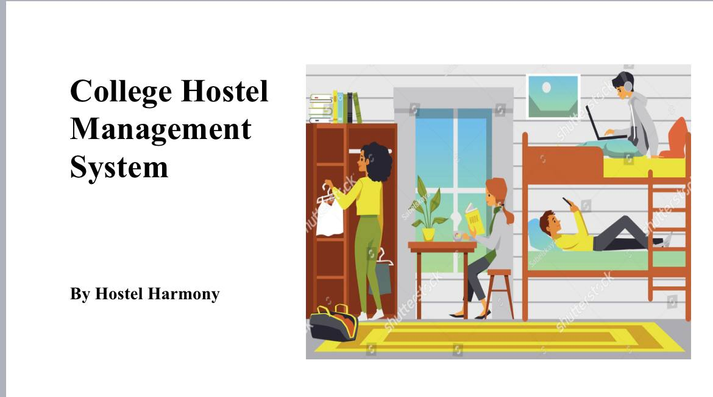

Web tutorials were another effective way to teach ICT to students. My group demonstrated a tutorial on the topic Introduction to Python, and it proved to be both engaging and productive compared to other strategies. The experience not only captured learners interest but also made the lesson more interactive and accessible. Through this, I gained confidence in using web tutorials as a teaching method, and I now feel better prepared as a future ICT teacher to design lessons that are both innovative and meaningful.

As an SCE Rover Leader, we organized a Peace Day event that brought together parents and lower school students for an interactive and fun session. Guided by the motto “Once a Scout, Always a Scout,” we continue to celebrate Peace Day in college through meaningful scout activities that promote unity and harmony.

As part of the DDD module assignment, we created a Digital Hostel Management System, which we demonstrated in class. Such projects are truly helpful in this digital era, as they enhance both our skills and understanding of technology.